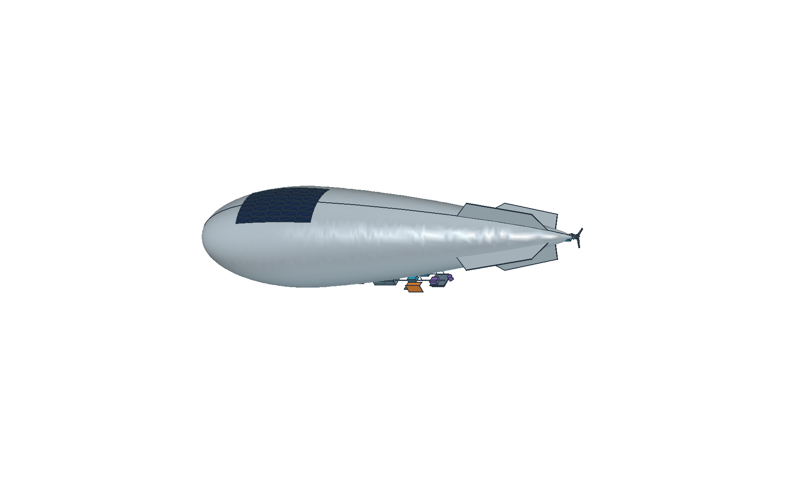
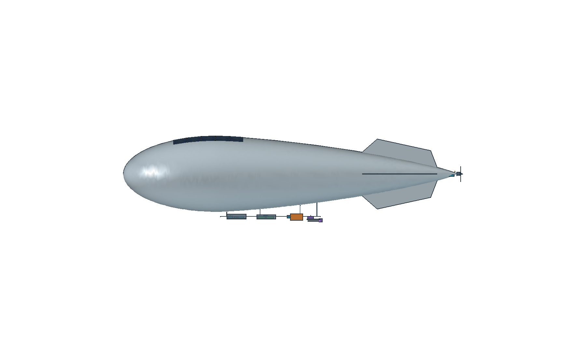

Stage 01 available · evidence, CAD and initial checks
Independent public-reference study. Reconstruct a 65 m reference class, propose a traceable thermal architecture, and work through analysis and verification gates. This is not Sceye production CAD, commissioned work or an endorsed design. Internal layouts and candidate thermal hardware are our proposals. No vehicle temperature field or physical validation is claimed at this stage.
01 / Native FreeCAD on Intel
Inspect the airship. Follow each thermal interface.
The exterior follows public imagery: a rounded envelope, dorsal solar patch, tail surfaces and a stern propeller. The underside service pods, avionics blocks, battery modules and thermal hardware form an independent integration concept. Select a part to inspect its evidence and the analysis it needs.

Loading native CAD display data…
Envelope / mountingAvionics & powerBatteryPayloadProposed thermal hardware
Geometric checks: 94 tagged display objects, native reopening and valid STEP re-import (133 solids), plus a closed hull STL. The cutaway is a zero-thickness display surface. These checks do not qualify material thickness, assembly interference, pressure integrity or flight performance.
02 / Public images, dimensions and patents
Keep the reconstruction tied to evidence.
Native CAD camera views · independently constructed


Published versus estimated
Published: SoftBank lists a 65 m reference vehicle; Sceye describes solar/battery power and under-platform payloads. Estimated: this model uses a 64 m axisymmetric envelope within a 65 m overall envelope, 14.5 m maximum diameter and inferred tail/solar proportions. Fin profiles, blade count, internal dimensions and installation counts are unconfirmed.
Use this as a public-reference class, not an as-built replica of every later SE2/ST1 vehicle. The source register separates historical photos, mission descriptions and design assumptions.
What the patent search contributes
Four relevant families were reviewed: harness support, hull laminate, Li–S battery separator and reinforced hull fibers. They guide research questions and interfaces. A disclosed embodiment does not establish what flew.
The older harness drawing shows side propellers; the photo-based CAD uses a stern propeller. Exact motor rating, cooling paths, current laminate stack and flight-cell properties remain unknown.
Geometry and evidence register
| Parameter / feature | Current representation | Evidence boundary |
|---|---|---|
| Reference overall length | 65 m | SoftBank public reference class; variant-specific applicability remains open. |
| Envelope | 64 m long, 14.5 m maximum diameter, axisymmetric shape | Selected proportions, not measured manufacturer geometry. No mass or lift budget inferred. |
| Solar patch / tail surfaces | Dorsal curved patches / four interpreted surfaces | Placement follows photos; patch segmentation, shape details and dimensions are illustrative. |
| Propulsion | Stern electric motor envelope and three-blade display propeller | Location follows photos; blade count/profile, efficiency, power and internal construction are unverified. |
| Equipment pods / modules | Proposed underside layout outside the helium envelope | Actual positions, count, packaging and wiring unavailable. |
| Radiators / straps / heaters | Our candidate thermal architecture | No assertion these are installed on Sceye vehicles. |
| Helium / pressure-control internals | Envelope display boundary only | Actual partitions, ballonets, gas plumbing and pressure-control equipment not reconstructed. |
03 / Four thermal areas, one coupled mission
Address the hardware one subsystem at a time.
Avionics
Keep junctions and sensors within their operating limits.
Resolve processor/PCB-to-case conduction, finite mounting contacts, DC–DC and distribution losses, wiring heat leaks and mode-dependent dissipation. Separate a component-average node from the hottest junction. Navigation/IMU stability can impose temperature-gradient or rate requirements.
First model: flight-computer, navigation, telemetry and power-conversion nodes tied to a conductive tray. Next evidence: loss maps, junction-to-case data, venting/pressure boundary and instrumented powered tests.
Structures and envelope
Thermal gradients also change mechanical behavior.
Evaluate solar-patch heating, shaded skin, seams, mount heat paths and the helium response over the day/night cycle. Track laminate/bondline temperatures and differential expansion. Optical or antenna mounts may need thermal-to-structural distortion mapping.
First model: separate illuminated/shaded envelope and mounting nodes. Next evidence: actual laminate properties, optical aging, gas/pressure topology, tension/strain allowables and bondline data.
Propulsion-adjacent systems
Separate motor, controller, bearing and mount losses.
The photographed topology is a stern propeller; public descriptions and patents support electric propulsion. Motor copper/iron losses, ESC switching losses, bearing limits and conduction into the mounting structure need separate paths. Air-relative speed and propwash change cooling.
First model: motor/controller/mount nodes with parameterized losses. Next evidence: electrical/shaft measurements across speed, load and pressure. Geographic station keeping does not imply zero relative airflow.
Payloads
Match the thermal design to the mission mode.
Telecom RF electronics need correct input-to-transmitted-power heat partition and duty cycles. Optical/IR payloads add detector temperature, gradient, alignment and contamination requirements. The illustrated telecom and optional optics envelopes are mission examples, not a claimed flight installation.
First model: payload electronics and mounting/aperture paths. Next evidence: the selected payload specification, dissipations, aperture boundary and thermally driven pointing limits.
Battery and solar power / shared thermal-energy constraint
Cold protection spends energy; heat rejection can increase cold exposure.
Sceye publicly identifies Li–S battery technology. That does not supply a selected cell’s heat map or charging limits. Our four module envelopes are layout placeholders. Build a chemistry-appropriate battery heat/SOC model and include heater energy in the overnight reserve. Partition solar absorption between electrical export and local heat without counting the same energy twice.
Actual cell properties, capacity, module count, pack limits, BMS logic and reserve requirements remain inputs to obtain. The public energy-density claim is not used as heat capacity or as a pack design value.
04 / Our candidate architecture
Provide a heat path, then control where it ends.
A first candidate separates the battery’s cold-protection zone from electronics heat rejection. The orange CAD parts show proposed radiators, conductive straps and heaters. This is a design to test, not a claim about the manufacturer’s installed thermal system.
Passive controls
Compare solar shields and optical treatments, conductive baseplates/straps, mounting thermal resistance, radiator placement and battery insulation. Include hull obstruction in view factors and characterize insulation at the relevant gas pressure.
Active controls
Begin with temperature-based battery heaters and explicit fault limits. Add controllable heat-rejection devices only if the passive trade cannot meet the mission; assess electrical cost, mass and failure behavior before selecting hardware.
Published heritage, with scope
NASA’s thermal-control overview documents these general techniques. A published balloon study examines shields/coatings, IR environment and equipment heat. Those examples support the method; they do not identify Sceye’s installed architecture.
Inspect the balloon sensitivity reference ↗05 / First calculations and numerical tool checks
Establish the environment before sizing the hardware.
The standard-atmosphere calculation uses geometric altitude converted to geopotential altitude. It illustrates the pressure and density scale; a real mission needs latitude, season, weather, wind, attitude and radiative bounds. The standard temperature near 20 km is not the coldest mission condition.
| Geometric altitude [km] | Air temperature [°C] | Absolute pressure [kPa] | Density [kg/m³] |
|---|---|---|---|
| 0 | 15.00 | 101.325 | 1.2250 |
| 11 | -56.38 | 22.700 | 0.3648 |
| 18 | -56.50 | 7.565 | 0.1216 |
| 20 | -56.50 | 5.529 | 0.0889 |
| 21 | -55.57 | 4.729 | 0.0757 |
| 22 | -54.58 | 4.047 | 0.0645 |
Illustrative heat-rejection screen
Adjust the load, proposed surface condition and assumed effective convection coefficient. This is a steady algebraic balance, not a solved low-pressure flow field or selected radiator. All default surface/environment inputs are study assumptions.
Loading algebraic screen…
q″net = h(Ts−Tair) + εσTs⁴ − ε(FEEE + FskyEsky + FhullσThull⁴) − αS cos θ. Effective area = waste heat / positive net rejection.
Fixed assumptions: air −56.5°C; solar 1361 W/m²; Earth IR 240 W/m²; sky IR 80 W/m²; hull −20°C; view factors Earth 0.2, sky 0.4, hull 0.4. Direct-sun shading does not remove surrounding IR. Reflected solar is omitted in this first screen; add it for design sizing. No gradients, interface losses, thermal capacity, heater control or SOC are solved here. CAD radiator dimensions are illustrative and have not been selected using this calculator.
Three native OpenModelica verification benchmarks
On Intel, linear heating/cooling were checked against their exponential analytical solutions; a nonlinear radiative equilibrium was checked against its fourth-root solution. These confirm the calculation tool and elementary equations, not the airship’s thermal behavior. Benchmark endpoint temperatures below are test-model outputs, not component predictions.
| Benchmark | Maximum analytical error [K] | Native endpoint [°C] | Status |
|---|---|---|---|
| Heating | 1.17e-08 | 45.662 | Passed numerical check |
| Cooling | 4.76e-08 | -0.530 | Passed numerical check |
| Radiation | 5.68e-14 | 4.945 | Passed numerical check |
The mission network is the next stage: include finite thermal masses, mode-dependent heat, Sun/Earth/hull exchange, pressure-dependent convection and battery/heater energy. Run repeated diurnal cycles or explicitly retain initial-state dependence; one arbitrary day does not establish sustainable operation.
06 / Capability-to-evidence matrix
Make each engineering responsibility reviewable.
Each row identifies what exists now, the next work and the evidence needed to close it. Planned tests, proposed interfaces and numerical checks retain their own status. This study does not claim manufacturer collaboration, flight qualification or hands-on hardware work that has not occurred.
| Capability | Evidence now | Next work | Acceptance / closure evidence | Current status |
|---|---|---|---|---|
| R01 · Active and passive thermal-control design | Candidate split: insulated battery/heater zone and conductive electronics/radiator path. | Run controlled baseline/coating/strap/insulation/heater trades. | Temperature margins, heater Wh and mass at equal mission service. | Architecture prepared |
| R02 · Steady and transient thermal analysis | Algebraic heat-rejection screen and three native solver verification benchmarks. | Develop a component-level diurnal network plus selected steady bounds. | Energy closure, time-step sensitivity and repeat-cycle convergence. | Initial checks complete |
| R03 · Reusable mission thermal models | Tagged CAD, source register, geometry parameters and model scope. | Add versioned operating profiles, boundaries and component parameters. | Input provenance, configuration hashes, repeatable outputs and holdout mission cases. | Model foundation prepared |
| R04 · Materials, insulation, coatings, radiators and interfaces | Candidate trade register and related public patent/method references. | Obtain measured conductivity, optical, contact and pressure-dependent insulation properties. | Mass/thermal trade curves with uncertainty; qualification requires hardware evidence. | Trade definition prepared |
| R05 · Requirements, operating limits and margins | Component register identifies required operational/survival/start/charge limits. | Populate supplier-approved limits before reporting pass/fail temperatures. | Hot margin = limit minus peak; cold margin = minimum minus limit, by mode and location. | Requirements template prepared |
| R06 · Environmental testing | Altitude, radiative balance, temperature cycle and vacuum test distinctions documented. | Execute approved tests with representative power, pressure, interfaces and sensor calibration. | Calibrated logs, test configuration and signed deviations; no test execution yet. | Test plan only |
| R07 · Test analysis and model correlation | Calibration/holdout process and observability requirements defined. | Fit bounded uncertain parameters on calibration data and predict independent holdout tests. | Peak/transient/heater-energy errors compared with measurement uncertainty. | Plan only; no test data |
| R08 · Cross-functional integration | Mechanical/electrical/systems/manufacturing interface and responsibility register. | Review actual CAD, loss maps, mission requirements and build tolerances with hardware owners. | Closed interface actions and configuration agreement. | Interfaces proposed; no team review claimed |
| R09 · Documentation and standards traceability | Sources, geometry assumptions, solver checks and downloadable records. | Tailor a requirements-verification matrix to the selected certification/test basis. | Traceable requirement-to-analysis/test evidence; no compliance declaration. | Documentation foundation complete |
| R10 · Design reviews, risks and improvement | Stage gates and an initial failure/risk register. | Perform reviewed trade down-select and update models after test discrepancies. | Action ownership, residual risk and evidence-based release gates. | Review package prepared |
| K01 · Conduction, convection and radiation at low density | Explicit heat-path and environment model definitions, including finite air convection. | Resolve or correlate key heat-transfer paths at altitude and ground/ascent conditions. | Separate contribution audits and uncertainty sensitivities. | Method demonstrated; vehicle solution pending |
| K02 · Equivalent thermal analysis tools | Native FreeCAD geometry and native OpenModelica analytical benchmark checks. | Couple system network to targeted OpenFOAM or Elmer spatial models. | Same physical boundaries and conserved heat flows across model fidelities. | Tool foundation verified |
| K03 · Hardware design through operational readiness | Buildable-interface, instrumentation and review checklists. | Build/test representative hardware and close integration/qualification evidence. | Actual approved hardware/test/flight records; a portfolio cannot substitute for them. | Hardware work not performed in this study |
07 / From analysis to hardware evidence
Plan the measurements that could disprove the model.
Test matrix / not yet executed
Define powered ground cycles, low-pressure-air thermal balance, controlled radiative loading, battery and motor/controller loss characterization, and reviewed fault cases. Thermal-vacuum testing has different convection conditions from altitude-air operation; choose conditions matching the path being evaluated.
Instrument component hot spots, both sides of key contacts, radiator roots/tips, battery proxies, propulsion mounts and structural references. Log calibrated temperature, pressure, electrical power and heater state on a common clock. Reflective hulls complicate IR-camera temperature measurements.
Correlation / no physical data yet
Use calibration tests to fit a small observable set of uncertain parameters; predict separate holdout conditions. Compare temperature extrema, time constants, heat flow and heater energy against measurement uncertainty. Keep interface-property fitting separate from model validation.
A fit to synthetic data is a method demonstration, not an experiment. No fabricated measurements are supplied here. A future 1D/3D agreement will be a consistency check, not hardware qualification.
Cross-functional interfaces
Mechanical: CAD, contact preload, properties, venting and gradient limits. Electrical: mode losses, RF export, heater/sensor/protection logic. Systems: environment, reserves, limits and failure response. Manufacturing: bondlines, finishes, tolerances and inspection. Test: boundary reproduction, calibration and repeatability.
These responsibilities are proposed; no review with those teams has occurred in this independent study.
Standards and readiness
NASA GEVS and RTCA’s environmental-test framework are planning references. Select the actual program basis, edition, categories and tailoring before claiming compliance. The ECSS handbook endpoint was unavailable; no detailed compliance interpretation was made.
Track requirements → analysis/test cases → configuration → uncertainty → disposition. Hardware readiness needs actual build, integration, approved test and review records. The portfolio documents the approach and closes only evidence it contains.
Initial risk and design-review register
Cold battery / heater failure. Model charge/discharge limits, reserve and stuck-on/off response. Requires selected-cell data and approved hardware testing.
Payload power or contact change. Sweep losses/contact resistance and instrument both sides of the path. A cool radiator does not establish a cool junction.
Radiator solar exposure / hull shading. Trace actual orientations and view factors. A radiation sink cannot be represented by ambient air temperature alone.
Envelope/structure gradients. Couple skin/gas temperature to pressure and thermal strain when actual material/topology data exist. Geometric CAD alone supplies no structural allowable.
Motor/controller cooling loss. Evaluate load, wind and propwash conditions plus mount temperatures; do not assign all shaft/electrical power as local heat.
Unknown internals and properties. Keep sensitivity ranges and source provenance. Obtain reviewed inputs before design release or claiming predictive accuracy.
08 / Open-source development record
Build the evidence in connected stages.
Available
Public evidence, geometry and model foundation
Source/photo/patent review, native CAD, subsystem inspector, candidate architecture, requirements/test plans, algebraic screen and three solver verification benchmarks.
Next
Mission thermal network
OpenModelica battery/avionics/payload/propulsion/skin nodes, day/night histories and an independent energy audit. Resolve input gaps before publishing hardware pass/fail margins.
Planned
Architecture and material trade studies
Equal-mission comparisons of surfaces, shielding, interface conductance, insulation, radiator area and heater rules. Include mass, uncertainty, heater Wh and energy reserve.
Planned
Targeted spatial thermal and structural analysis
OpenFOAM conjugate heat transfer or an appropriate open-source conduction/FEM solver for selected hot spots, external exchange and thermal distortion. Match network boundaries before comparing fidelities.
Requires measurements
Environmental test and correlation
Calibration and independent holdout cases, uncertainty accounting, discrepancy analysis and design updates. No physical data have been obtained for this study.
Requires hardware / review
Integration and operational readiness
Build records, interface closure, approved verification, residual risks and readiness decisions. These cannot be completed by a CAD model or simulation video alone.
Toolchain: FreeCAD 1.1.4 and OpenModelica 1.27.1 were executed on Intel. OpenFOAM’s chtMultiRegionFoam executable is available for a later CHT stage; no HAPS CFD run exists yet. Python provides independent calculations and audits. Additional spatial postprocessing/FEM tools will be checked when their stage begins. All project source is downloadable.
09 / Reproduce and inspect
Download the working geometry and evidence.
Complete original work · source/CAD/results ZIP ↓Native FreeCAD assembly ↓Assembly STEP ↓Closed reference hull STL ↓Regenerating FreeCAD macro ↓Geometry parameters and scope ↓Tagged component/source register ↓Capability evidence matrix ↓Detailed design basis and limits ↓Test, correlation and integration plan ↓Native OpenModelica benchmarks ↓Analytical verification results ↓Native CAD / STEP / STL verification ↓Presizing inputs and outputs ↓Environment scale · CSV ↓Artifact SHA-256 manifest ↓
The package contains our work and retained numerical outputs. Source photographs remain credited and linked separately; private recruiting documents, NDA material, employer/client files and meeting information are excluded. Compiled working products remain on Intel. Serve the downloaded report folder over HTTP for its JSON/module viewer.
Inspect the proposed component register
| Tag | Component envelope | Geometry evidence | Thermal question |
|---|---|---|---|
| HULL | Gas envelope display body | Photo-inferred | Solar/IR gradients, gas-temperature/pressure coupling and laminate limits |
| CUTAWAY | Half envelope display shell | Illustrative | Display cut only; no assigned physical wall thickness |
| PV0000 | Dorsal solar display patch | Photo-inferred | Absorbed solar heat, electrical export, substrate conduction and optical aging |
| FIN0 | Cruciform tail surface | Photo-inferred | Solar gradients, bondlines, actuator attachment and dimensional stability |
| FIN1 | Cruciform tail surface | Photo-inferred | Solar gradients, bondlines, actuator attachment and dimensional stability |
| FIN2 | Cruciform tail surface | Photo-inferred | Solar gradients, bondlines, actuator attachment and dimensional stability |
| FIN3 | Cruciform tail surface | Photo-inferred | Solar gradients, bondlines, actuator attachment and dimensional stability |
| MOTOR | Stern electric motor envelope | Photo-inferred | Copper/iron losses, bearings, low-density cooling and heat into the mount |
| SHAFT | Propeller shaft / hub | Inferred | Bearing conduction and shaft/mount temperatures |
| PROP0 | Propeller blade display 0 | Illustrative | Propwash convection sensitivity; no aerodynamic thrust/efficiency prediction |
| PROP1 | Propeller blade display 1 | Illustrative | Propwash convection sensitivity; no aerodynamic thrust/efficiency prediction |
| PROP2 | Propeller blade display 2 | Illustrative | Propwash convection sensitivity; no aerodynamic thrust/efficiency prediction |
| SPINNER | Stern spinner | Illustrative | Motor/hub external exchange |
| RAILS | Proposed mounting/thermal route | Proposed | Mount heat leak, contact resistance and structural integration |
| RAILP | Proposed mounting/thermal route | Proposed | Mount heat leak, contact resistance and structural integration |
| MNT19840-650 | Proposed mounting/thermal route | Proposed | Mount heat leak, contact resistance and structural integration |
| MNT19840650 | Proposed mounting/thermal route | Proposed | Mount heat leak, contact resistance and structural integration |
| MNT26240-650 | Proposed mounting/thermal route | Proposed | Mount heat leak, contact resistance and structural integration |
| MNT26240650 | Proposed mounting/thermal route | Proposed | Mount heat leak, contact resistance and structural integration |
| MNT33920-650 | Proposed mounting/thermal route | Proposed | Mount heat leak, contact resistance and structural integration |
| MNT33920650 | Proposed mounting/thermal route | Proposed | Mount heat leak, contact resistance and structural integration |
| MNT37120-650 | Proposed mounting/thermal route | Proposed | Mount heat leak, contact resistance and structural integration |
| MNT37120650 | Proposed mounting/thermal route | Proposed | Mount heat leak, contact resistance and structural integration |
| BATCOVER | Battery pod cover | Proposed | External pressure, insulation support and maintenance clearance |
| BAT0 | Battery module envelope | Proposed | Loss map versus SOC/T, cold charge restriction, insulation and heater energy |
| HTR0 | Proposed battery heater mat | Proposed | Thermostatic control, heater stuck-on/off and local temperature sensing |
| BAT1 | Battery module envelope | Proposed | Loss map versus SOC/T, cold charge restriction, insulation and heater energy |
| HTR1 | Proposed battery heater mat | Proposed | Thermostatic control, heater stuck-on/off and local temperature sensing |
| BAT2 | Battery module envelope | Proposed | Loss map versus SOC/T, cold charge restriction, insulation and heater energy |
| HTR2 | Proposed battery heater mat | Proposed | Thermostatic control, heater stuck-on/off and local temperature sensing |
| BAT3 | Battery module envelope | Proposed | Loss map versus SOC/T, cold charge restriction, insulation and heater energy |
| HTR3 | Proposed battery heater mat | Proposed | Thermostatic control, heater stuck-on/off and local temperature sensing |
| BMS | Battery monitoring/control unit | Proposed | Electronics self-heating, sensor accuracy and power switching loss |
| AVCOVER | Avionics pod cover | Proposed | Vented-versus-sealed pressure boundary and external exchange |
| AVBASE | Avionics conductive baseplate | Proposed | Spreading resistance and local contact conductance |
| FCS | Flight computer envelope | Proposed | Processor hot spots, board/case conduction and mounting interface |
| NAV | Navigation / IMU envelope | Proposed | Temperature-dependent bias, stability and structural heat paths |
| COMMS | Command/telemetry electronics | Proposed | Dissipation modes and RF/electrical heat partition |
| MPPT | Solar power conversion / MPPT | Proposed | Power-conversion losses and conduction to baseplate |
| DCDC | DC-DC / distribution envelope | Proposed | Switching/conduction losses, connector hot spots and low-pressure insulation |
| PAYBASE | Proposed payload mounting plate | Proposed | Conductive mounting, pointing stability and cable heat leaks |
| RF | Telecom RF electronics envelope | Proposed | PA losses versus transmitted power, junction-to-case paths and thermal derating |
| ANT | Nadir antenna aperture envelope | Proposed | Face solar/Earth loading, RF transparency and array temperature uniformity |
| OPTICS | Optional EO/IR payload envelope | Proposed | Detector operating temperature, optical alignment and thermal isolation |
| ESC | Proposed motor-controller envelope | Proposed | Switching loss, motor/controller separation and conductive cooling |
| RAD0 | Proposed outboard radiator | Proposed | Sky/Earth/hull view factors, solar exclusion and nighttime overcooling |
| STRAP0 | Proposed electronics thermal strap | Proposed | Finite strap/contact resistance; no ideal-isothermal bridge assumption |
| RAD1 | Proposed outboard radiator | Proposed | Sky/Earth/hull view factors, solar exclusion and nighttime overcooling |
| STRAP1 | Proposed electronics thermal strap | Proposed | Finite strap/contact resistance; no ideal-isothermal bridge assumption |
| TC0 | Proposed temperature instrumentation | Proposed | Candidate test/sensor location; no measurement has been taken |
| TC1 | Proposed temperature instrumentation | Proposed | Candidate test/sensor location; no measurement has been taken |
| TC2 | Proposed temperature instrumentation | Proposed | Candidate test/sensor location; no measurement has been taken |
| TC3 | Proposed temperature instrumentation | Proposed | Candidate test/sensor location; no measurement has been taken |
| TC4 | Proposed temperature instrumentation | Proposed | Candidate test/sensor location; no measurement has been taken |
| TC5 | Proposed temperature instrumentation | Proposed | Candidate test/sensor location; no measurement has been taken |
10 / Source-to-model register
Inspect what each reference supports.
Sixteen manufacturer, partner, patent and methods references were registered on 23 October 2026. This is a curated starting register, not an exhaustive patent search or a recovered manufacturer design package. The independent assumptions have their own D01 record, giving seventeen records in total.
- S01 · Sceye platform ↗Manufacturer. Solar/battery operating concept, under-platform payloads and public battery technology claims.Boundary: No internal CAD, heat losses, cell maps, thermal limits or current pack layout.
- S02 · SoftBank HAPS technology ↗Partner. Public 65 m length reference and helium-buoyancy architecture.Boundary: A public reference class, not proof every newer vehicle has the same dimensions.
- S03 · Sceye diurnal flight, 19 August 2024 ↗Manufacturer. Photographed envelope, dorsal array, tail surfaces and stern propeller; historical payload categories.Boundary: Perspective images cannot establish hidden internal dimensions or installed motor rating.
- S04 · Mobius Robotics Sceye systems design ↗Design partner. Partner states involvement in propulsion and embedded systems; gallery provides complementary exterior views.Boundary: No motor/ESC specifications or current installation drawings.
- S05 · SceyeCELL announcement, 23 February 2026 ↗Manufacturer. Stratospheric telecom payload and harsh operating context.Boundary: No published internal RF loss map, cooling architecture or part temperature limits.
- S06 · Sceye SE2 endurance, 13 April 2026 ↗Manufacturer. Company-reported repeated day/night endurance, relevant to a diurnal thermal-energy budget.Boundary: Mission achievements do not validate this independent model or define its geometry.
- P01 · Harness construction, US20190329855A1 / US11541980B2 ↗Patent disclosure. A hull-support harness concept connects power and propulsion equipment.Boundary: The illustrated side-propeller embodiment is historical; not evidence of the photographed stern configuration.
- P02 · Hull laminate, US11285707B2 ↗Patent disclosure. Layered hull-material construction offers a material-property research direction.Boundary: No claim that the disclosed stack or thickness is the current flight laminate.
- P03 · Li-S separator, US20180287121A1 / US11749831B2 ↗Patent disclosure. Battery research context consistent with the manufacturer public Li-S description.Boundary: No chemistry-specific safety, thermal-loss map, pack layout or actual flight-cell selection is inferred.
- P04 · Reinforced fibers, US20210394885A1 / US11958584B2 ↗Patent disclosure. Hull-fiber durability/material-development context.Boundary: Does not supply certified composite allowables, coating optics or a current production specification.
- T01 · NASA thermal control overview ↗Methods reference. Heat-path, radiative optical properties and active/passive control concepts.Boundary: Spacecraft guidance does not justify neglecting atmospheric convection for HAPS.
- T02 · NASA balloon thermal sensitivity study, 2017 ↗Methods reference. Coatings, IR environment and dissipation sensitivity in a published balloon example.Boundary: The EUSO 35 km geometry and results are not Sceye validation data.
- T03 · U.S. Standard Atmosphere 1976 ↗Environment reference. Standard pressure/temperature layers; geometric-to-geopotential conversion.Boundary: Not a mission-specific weather, seasonal or extreme-temperature envelope.
- T04 · NASA GSFC-STD-7000B ↗Verification reference. Environmental-verification planning reference; catalog lists Rev B active.Boundary: Not automatically applicable to HAPS; no compliance or completed hardware test claimed.
- T05 · RTCA environmental test overview ↗Verification reference. Candidate airborne-equipment test framework.Boundary: Detailed edition/category/applicability not selected; the public page lists a planned revision and must be reconciled before use.
- T06 · ECSS thermal analysis handbook catalog ↗Candidate reference. Potential thermal-model documentation reference.Boundary: Full handbook not reviewed here; publisher endpoint was unavailable during this pass.
- D01 · Independent engineering assumptions ↗Study design. CAD proportions, underside pods, component counts, candidate radiators, heaters, straps and instruments.Boundary: These are our proposed teaching/review geometry, not manufacturer internal hardware.